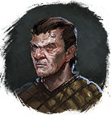

Открыть в интерактивной вики →
| Уровень | 12 |
|---|---|
| Сила (PvE) | 113 |
| Аспект арены | Farao |
| Здоровье | 300 |
| Мана | 500 |
| Выносливость | 500 |
Статистика

Уровень: 12
Здоровье: 300
Мана: 500
Выносливость: 500
Умения
| Выстрел Отравленная стрела | Обостренные чувства Боевой Клич Ярость |
Локация
Пещера Главаря,
Южная Пещера
Иммунитеты / особые умения
-
Дроп
-